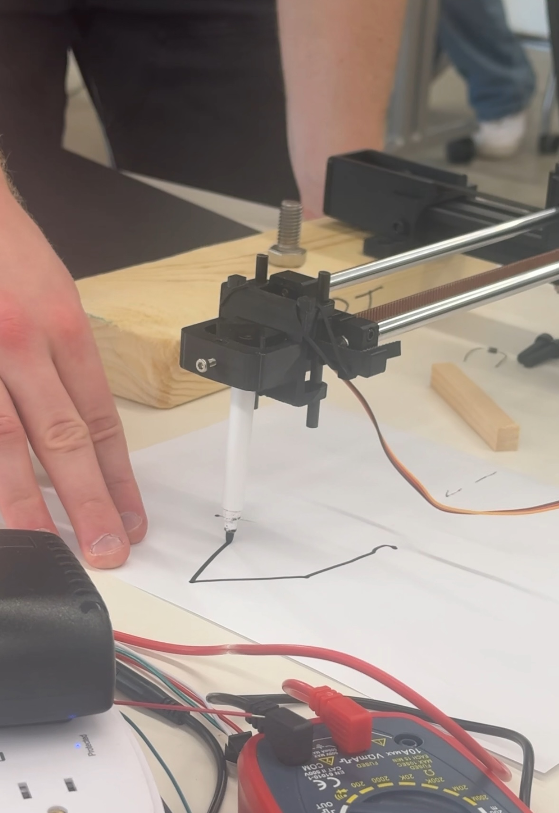
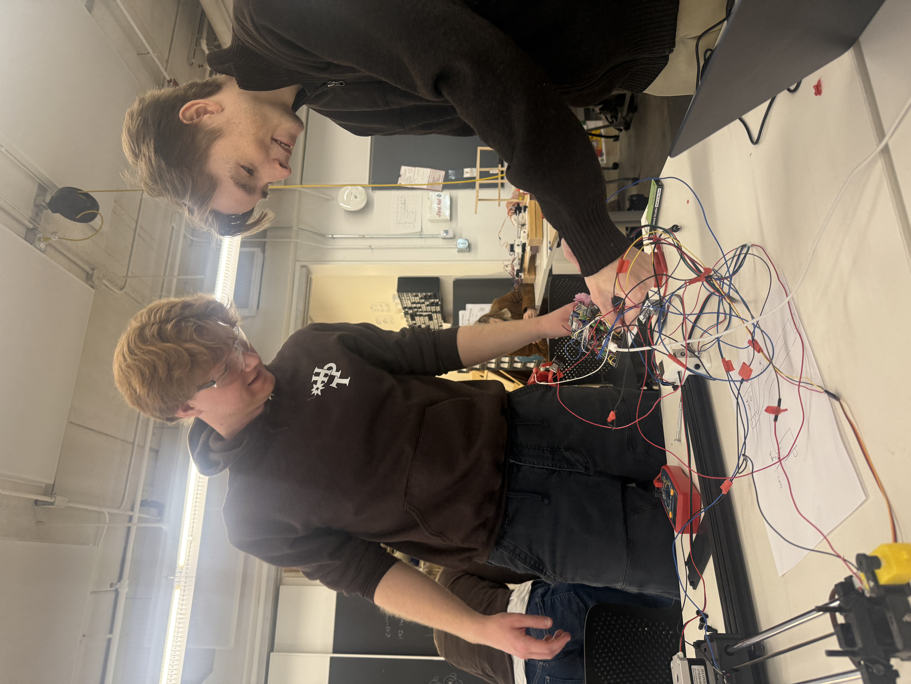

<div class="textcontainer">
<p class="margin"> </p>
<h3><a href="https://nathanmelenbrink.github.io/ps70/10_machines/index.html", target="_blank" style="color:#b33b72;">Week 10:</a> Machine Building and End Effectors</h3>
<hr style="border: 1px solid #b33b72;">
<div style="display:flex; justify-content:center; align-items:flex-start; gap:20px;">
<figure style="display:inline-flex; flex-direction:column; align-items:center;">
<p></p>
</figure>
<figure style="display:inline-flex; flex-direction:column; align-items:center;">
<div style="display:flex;">
<p></p>
</div>
</figure>
</div>
<h4>Assignment: Build a 2+ DoF drawing machine</h4>
Week 10's assignment was another group assignment of PS70! We were assigned to build a 2+ DoF drawing machine that minimally deviated from the example hardware and software but implemented a creative, new end-effector. We decided to create a drawing machine that was "anxious", receiving input from a volume sensor. Basically, if you spoke too loudly to it, it was supposed to shake and be "nervous". LOL! Check it out on Darwin's page below!
<p class="margin"> </p>
<div class="flexrow">
<a id="btn" href="https://rubyeye7.github.io/PS70/04_microcontroller/index.html"target="_blank">Link to our documentation!
</a>
</div>
<p class="margin"> </p>
</div>